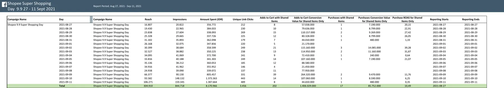

Memanfaatkan momentum 9.9 tanpa kehilangan kontrol atas efisiensi.
Campaign Shopee Super Shopping Day 9.9 dijalankan melalui CPAS, yang menghubungkan iklan Meta dengan aktivitas produk di marketplace. Objective-nya bukan hanya mendatangkan traffic, tetapi mendorong pembelian yang dapat ditelusuri kembali ke budget iklan.
Selama 27 Agustus sampai 11 September 2021, campaign menjangkau 304.910 orang dan menghasilkan 844.718 impressions. Dari spend Rp8.170.966, tercatat purchase conversion value Rp85.752.000 atau purchase ROAS 10,49×.

Traffic meningkat tajam menjelang puncak, tetapi kualitasnya tidak tumbuh dengan kecepatan yang sama.
Pada 9–11 September, reach, impressions, klik, dan spend mencapai level tertinggi. Namun, daily purchase ROAS turun dari 11,76× pada 9 September menjadi 6,25× pada 10 September dan 0,35× pada 11 September.
Pola ini membuat saya tidak cukup hanya melihat total ROAS. Campaign memang menghasilkan return yang kuat secara keseluruhan, tetapi data harian menunjukkan bahwa penambahan budget pada fase puncak perlu dikendalikan agar tidak membeli volume yang semakin mahal dengan kualitas konversi yang menurun.
Budget tambahan baru menciptakan pertumbuhan yang sehat jika purchase conversion value ikut bertambah dengan rasio yang masih dapat diterima.
Saya memisahkan volume, intent, dan nilai transaksi.
- Volume distribusiReach dan impressions digunakan untuk melihat seberapa besar momentum 9.9 memperluas exposure campaign.
- Kualitas trafficUnique link clicks dibandingkan dengan spend dan perubahan harian agar lonjakan traffic tidak otomatis dianggap sebagai perbaikan.
- Sinyal intentJumlah add to cart dibaca sebagai minat kuat, tetapi tetap dipisahkan dari purchase karena keduanya memiliki nilai bisnis yang berbeda.
- Hasil akhirPurchase conversion value dan purchase ROAS menjadi dasar utama untuk menilai apakah budget benar-benar menghasilkan penjualan.
Hasil akhirnya kuat, sementara data harian menunjukkan ruang optimasi yang jelas.
- Campaign membukukan ROAS 10,49×.Purchase conversion value Rp85,75 juta dihasilkan dari spend Rp8,17 juta.
- Hari paling efisien tidak membutuhkan spend tertinggi.ROAS harian tertinggi tercatat 39,28× pada 2 September dan 31,87× pada 3 September, ketika spend masih berada di kisaran Rp350 ribu per hari.
- Puncak traffic menekan efisiensi.Pada 10 dan 11 September, spend mencapai sekitar Rp1,37 juta per hari, tetapi purchase ROAS turun menjadi 6,25× dan 0,35×.
- Masih ada jarak besar dari cart ke purchase.Campaign menghasilkan 202 add to cart dan 17 purchase; sekitar 8,4% sinyal cart berlanjut menjadi transaksi tercatat.
- Add-to-cart value tidak boleh disamakan dengan revenue.Nilai keranjang mencapai Rp1,40 miliar, tetapi keputusan akhir tetap didasarkan pada purchase conversion value Rp85,75 juta.
Mempertahankan hasil 10× dengan scaling yang lebih selektif.
- Gunakan purchase ROAS sebagai guardrail scaling.Budget dapat dinaikkan bertahap selama conversion value tumbuh dan daily ROAS tidak turun melewati batas yang disepakati.
- Majukan sebagian budget ke fase pra-puncak.Data 2–5 September menunjukkan efisiensi tinggi sebelum lonjakan spend pada tiga hari terakhir.
- Bangun retargeting untuk cart abandoner.Audiens yang sudah menambahkan produk ke keranjang membutuhkan pesan promo, urgency, dan benefit checkout yang lebih spesifik.
- Refresh creative menjelang peak day.Peningkatan volume dapat mempercepat fatigue; variasi pesan dan visual perlu disiapkan sebelum frekuensi serta kompetisi naik.
- Pisahkan monitoring cart value dan purchase value.Keduanya berguna, tetapi hanya purchase value yang digunakan untuk mengukur revenue campaign.
ROAS 10,49× adalah hasil yang kuat. Nilai tambah analisisnya terletak pada kemampuan melihat kapan performa tersebut terbentuk dan bagaimana menjaganya saat campaign memasuki fase scaling.